Application Layer
Pertemuan 12
Pendalaman Ekstensif: Web & HTTP, E-mail (SMTP/IMAP), dan DNS
Dosen Pengampu:
Outline Materi
1. Prinsip Lapisan Aplikasi
- Arsitektur: Client–Server vs Peer-to-Peer (P2P)
- Kebutuhan Layanan & Pemetaan Transpor (TCP / UDP)
2. Protokol Web & HTTP
- Sifat Stateless & Anatomi Request/Response
- Manajemen Status (Cookies) & Web Caching
- Evolusi Protokol: HTTP/1.1, HTTP/2, dan HTTP/3
3. FTP & Ekosistem E-mail
- FTP: Dual-Channel Out-of-band (Active vs PASV)
- E-mail: Pengiriman SMTP & Akses POP3 / IMAP
4. Domain Name System (DNS)
- Hierarki Server & Resolusi (Iterated vs Recursive)
- Resource Records & Pengamanan DNSSEC
5. Eksplorasi & Simulasi
- Investigasi CLI (
curl,dig) & Tugas Mandiri
1. Prinsip & Arsitektur Lapisan Aplikasi
Paradigma Komputasi Terdistribusi, Kebutuhan Layanan Transpor (QoS), dan Pemetaan Port
Paradigma Aplikasi: Client–Server
Central Server (Always-On):
- Host sentral yang selalu aktif melayani permintaan (24/7 always-on).
- Memiliki IP Address publik statis permanen.
- Ditempatkan di Data Center berskala besar demi skalabilitas & keandalan.
Clients (Heterogeneous End Systems):
- Memulai kontak ke server secara on-demand (Request).
- Dapat memiliki IP dinamis (DHCP/seluler) dan terputus sewaktu-waktu.
- Klien tidak berkomunikasi langsung dengan klien lain.
Contoh Protokol: Web (HTTP/HTTPS), E-mail (SMTP/IMAP), FTP, DNS.
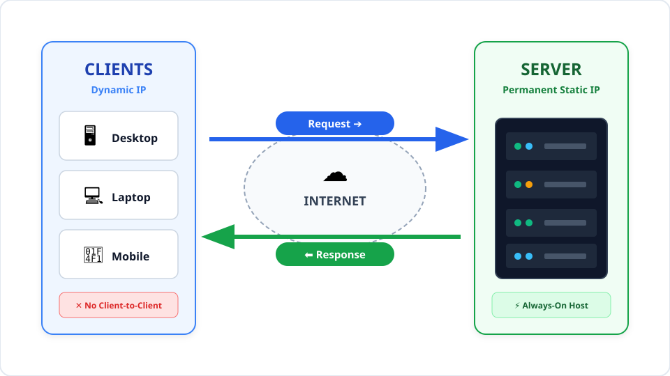
Gambar 12.1: Paradigma Arsitektur Komputasi Client–Server
Paradigma Aplikasi: Peer to Peer (P2P)
1. Karakteristik & Self-Scalability:
- Tanpa Server Terpusat Permanen: End system (peer) berkomunikasi langsung satu sama lain.
- Self-Scalability: Setiap peer baru yang meminta file (demand) otomatis menyumbang kapasitas komputasi & bandwidth unggah (service capacity).
2. Dua Tantangan Teknis Utama:
- Proteksi NAT & Firewall (NAT Traversal): Pengguna rumahan/seluler berada di balik NAT (IP privat) dan firewall yang menolak koneksi masuk (inbound). Peer tidak bisa saling kontak langsung tanpa teknik hole punching (STUN/TURN/ICE).
- Peer Churn (IP Dinamis & Offline): Node bebas keluar-masuk secara independen dan IP publik sering berganti → Menimbulkan beban sinkronisasi Distributed Hash Table (DHT) dan interupsi unduhan potongan file (chunks).
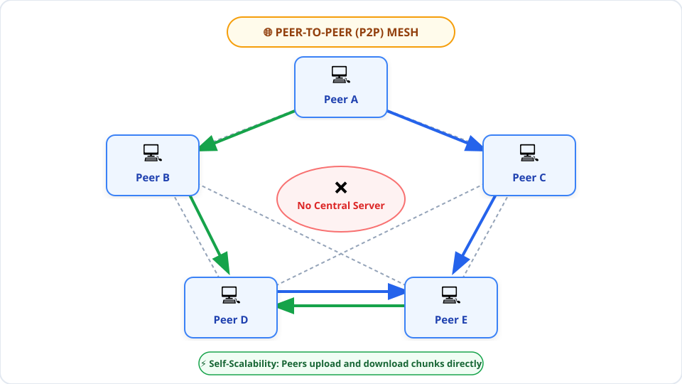
Gambar 12.2: Paradigma Arsitektur Komputasi Peer-to-Peer (P2P)
Kebutuhan Layanan Transpor bagi Aplikasi (QoS)
Setiap aplikasi mendefinisikan profil kualitas layanan (Quality of Service) ke lapisan transpor:
- Integritas Data (Data Integrity):
Aplikasi transfer file, finansial, dan email membutuhkan 100% loss-free (Reliable). Aplikasi multimedia dapat mentoleransi sedikit kehilangan paket (loss-tolerant). - Throughput: Bandwidth-Sensitive vs Elastic:
• Bandwidth-Sensitive: Video streaming memerlukan ambang batas throughput minimum agar pemutaran tidak macet (buffer underrun). Trafik tidak harus konstan, melainkan bursty dan beradaptasi dinamis via DASH (1080p butuh ≈ 5 Mbps, 4K butuh ≈ 20 Mbps).
• Elastic: Aplikasi web dan email dapat beroperasi pada bandwidth berapa pun (hanya durasi transfer yang berubah). - Sensitivitas Waktu (Timing / Latency):
Game online dan panggilan suara (VoIP) memerlukan latensi sangat rendah (< 150 ms) agar interaktif tanpa jeda percakapan. - Keamanan (Security):
Kerahasiaan data via enkripsi TLS/SSL, integritas pesan (anti-tampering), dan otentikasi identitas.
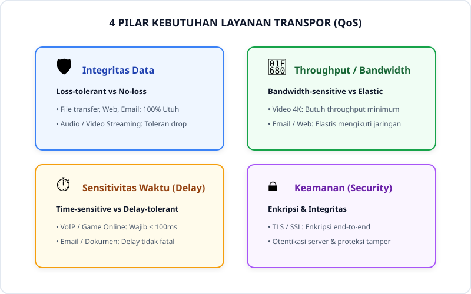
Pemetaan Protokol Aplikasi ke Protokol Transpor
| Aplikasi | Protokol Aplikasi | Protokol Transpor (Utama vs Alternatif) |
|---|---|---|
| File Transfer | FTP (RFC 959) | TCP Port 20, 21 (Reliable, bebas loss) |
| Web Browsing | HTTP/1.1 & HTTP/2 | TCP Port 80, 443 |
| Electronic Mail | SMTP, IMAP, POP3 | TCP Port 25, 143, 110 |
| DNS Resolution | DNS (Port 53) |
Utama: UDP (1 RTT tanpa
handshake) Alternatif: TCP (Zone Transfer & balasan > 512 byte / DNSSEC) |
| Video Streaming | DASH, HLS, HTTP/3 |
Utama: TCP (HTTP lolos
firewall/CDN) & UDP (HTTP/3-QUIC) Alternatif: UDP (RTP/RTSP legacy) |
| Internet Telephony | WebRTC, SIP, RTP |
Utama: UDP (Latensi < 150ms,
anti-retransmisi usang) Alternatif: TCP (Port 443 tunneling fallback) |
TC=1 aktif). VoIP menolak retransmisi TCP
karena paket suara yang datang terlambat 200 ms sudah basi dan tidak berguna.
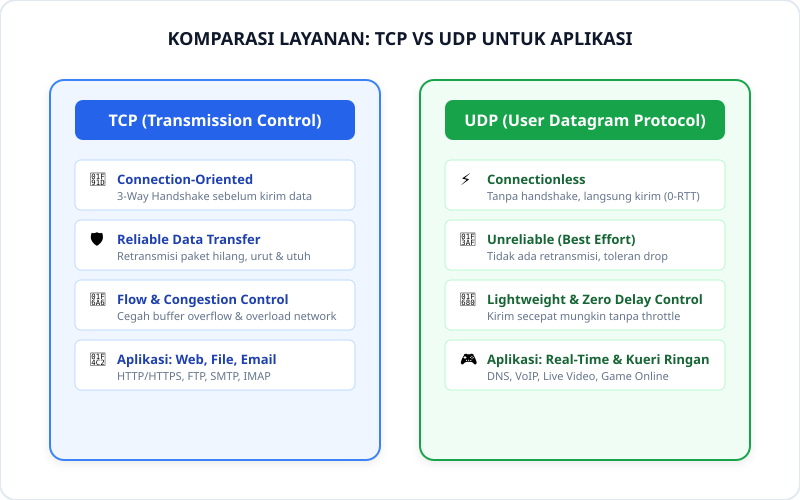
2. Protokol Web & Hypertext Transfer Protocol (HTTP)
Arsitektur Web, Sifat Stateless, Siklus RTT, Header HTTP, Cookies, Caching & Evolusi HTTP/2-3
Arsitektur Web & Sifat Stateless HTTP
Komponen Dokumen Web:
- Halaman web tersusun atas Base HTML File dan beberapa Referenced Objects (gambar JPEG, video, CSS, JavaScript).
- Setiap objek dialamatkan oleh sebuah URL (Uniform Resource Locator):
http://www.itera.ac.id/jurusan/teknik-informatika/logo.png
Host Name: www.itera.ac.id | Path: /jurusan/.../logo.png
Sifat Krusial HTTP: STATELESS
- HTTP berjalan di atas TCP (Port 80 / Port 443 HTTPS).
- Server melayani request klien, mengirimkan respon, lalu tidak mengingat apa pun tentang request klien di masa lalu.
- Keuntungan: Desain server sangat sederhana, toleran terhadap kegagalan, dan memiliki skalabilitas tinggi.
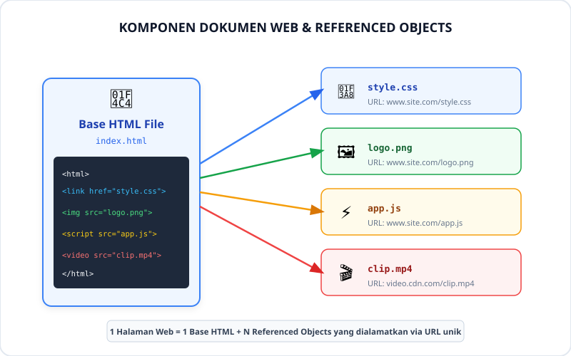
Koneksi HTTP: Non-Persistent vs Persistent & RTT
1. Non-Persistent HTTP (HTTP/1.0):
- Maksimal 1 objek dikirim melalui 1 koneksi TCP terbuka. Setelah objek terkirim, koneksi TCP langsung ditutup.
- Jika halaman memiliki 1 base HTML + 10 gambar referensi, dibutuhkan 11 kali buka-tutup TCP!
- Setiap objek memakan waktu: 2 × RTT + Transmit Time
(1 RTT untuk 3-Way Handshake TCP + 1 RTT untuk Request/Response HTTP).
2. Persistent HTTP (HTTP/1.1):
- Server membiarkan koneksi TCP tetap terbuka setelah mengirim respon.
- Seluruh objek referensi berikutnya dikirimkan melalui koneksi TCP yang sama.
- Objek referensi berikutnya hanya membutuhkan 1 × RTT! Menghemat beban kernel dan latensi pengguna secara masif.
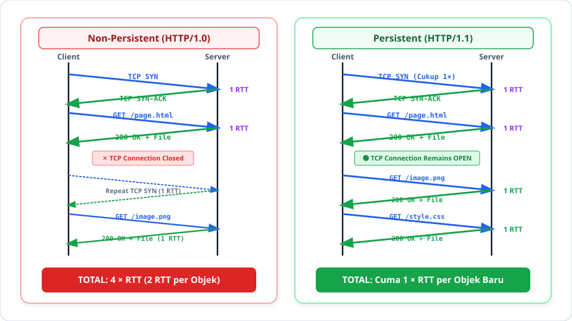
Anatomi Pesan HTTP Request
Format pesan HTTP berbasis teks ASCII yang terstruktur dalam 3 bagian:
Host: www.someschool.edu Header Line
User-Agent: Mozilla/5.0 (Windows NT 10.0)
Accept: text/html,application/xhtml+xml
Accept-Language: id,en-US;q=0.7
Connection: keep-alive
Baris Kosong Pemisah
[Entity Body Kosong pada Method GET]
Metode Request Populer:
GET: Meminta objek dari server (parameter di URL).POST: Mengirim data formulir/payload dalam Entity Body.HEAD: Meminta respon identik dengan GET tetapi tanpa entity body (untuk uji debugging/cache).PUT/DELETE: Mengunggah file ke server / Menghapus file di server.
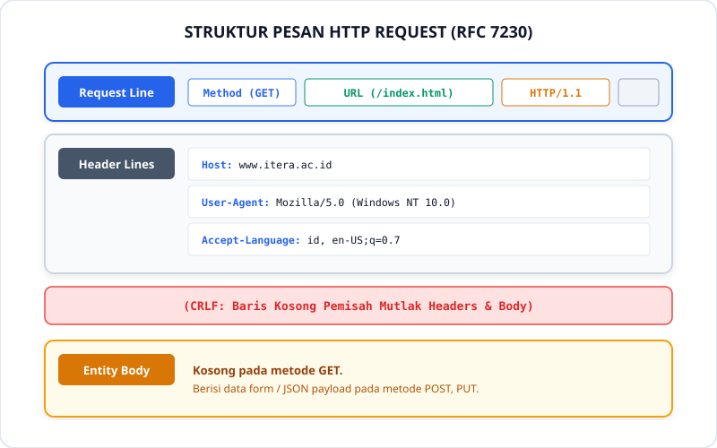
Anatomi Pesan HTTP Response & Status Codes
Date: Sun, 15 Nov 2026 12:00:00 GMT
Server: Apache/2.4.41 (Ubuntu)
Last-Modified: Sat, 14 Nov 2026 08:30:00 GMT
Content-Length: 6821
Content-Type: text/html; charset=UTF-8
<html><body><h1>Halo ITERA!</h1>... [Data Objek]
Katalog Kode Status Esensial:
| 200 OK | Permintaan berhasil, objek yang diminta disertakan pada respon. |
| 301 Moved | Objek dipindahkan permanen; URL baru dicantumkan di header Location:.
|
| 304 Not Mod | Objek di cache klien belum berubah; kirim tanpa body data (Conditional GET). |
| 400 Bad Req | Pesan request tidak dipahami oleh parser server. |
| 404 Not Found | Dokumen yang diminta tidak ditemukan di server. |
| 500 Server Err | Terjadi eksepsi / kegagalan script backend di sisi server. |
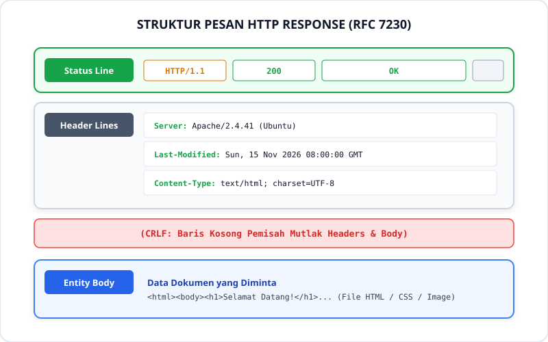
Cookies: Membawa "State" pada Protokol Stateless
Bagaimana Tokopedia atau Shopee mengingat keranjang belanja kita jika HTTP itu pelupa (Stateless)? Jawabannya adalah Cookies.
Empat Komponen Mekanisme Cookie:
- Header
Set-Cookie: ID=1634pada HTTP response pertama dari server. - Penyimpanan file cookie di perangkat klien (dikelola oleh browser).
- Header
Cookie: ID=1634pada seluruh HTTP request berikutnya ke situs tersebut. - Basis data backend di server yang memetakan ID=1634 ke profil, riwayat, dan keranjang belanja pengguna.
Isu Privasi: Third-Party Tracking Cookies
- Jaringan iklan (contoh: Google AdX) menaruh banner pada banyak situs berbeda.
- Cookie pihak ketiga melacak rekam jejak browsing pengguna lintas situs web, menyusun profil preferensi pribadi tanpa disadari.
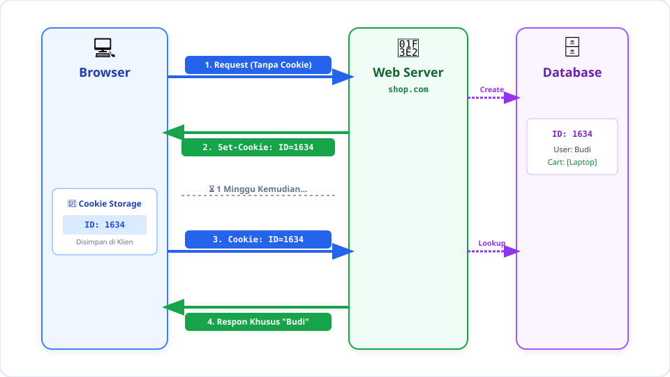
Web Caches (Proxy Server) & Conditional GET
Tujuan Web Cache (Proxy Server):
- Melayani permintaan klien tanpa melibatkan origin server.
- Cache bertindak ganda: sebagai server bagi browser pengguna lokal, dan sebagai client bagi server asal di internet.
- Ditempatkan di jaringan kampus/ISP untuk memangkas latensi respon dan menghemat konsumsi bandwidth tautan keluar.
Mekanisme Validasi: Conditional GET
- Bagaimana memastikan file di cache belum usang (stale)?
- Proxy mengirim request ke origin server dengan header:
If-Modified-Since: <date_terakhir_di_cache> - Jika file belum berubah, origin server menjawab:
HTTP/1.1 304 Not Modified (Body kosong / 0 byte data!). - Jika file berubah, server mengirim 200 OK beserta isi file baru.
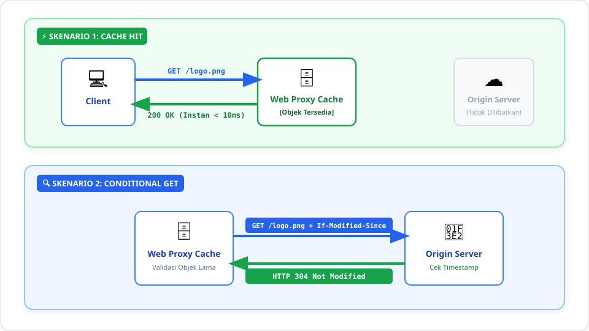
Analisis Matematis: Evaluasi Kinerja Caching
Parameter Jaringan Kampus (Kurose & Ross):
• Utilisasi Link Akses (I) = 1.50 Mbps / 1.54 Mbps ≈ 97% (Macet Total)
• Teori Antrean (M/M/1): Beban 97% menyebabkan penumpukan buffer → delay membengkak puluhan detik!
• Utilisasi Baru Link Akses: Ibaru = (0.60 × 1.50 Mbps) / 1.54 Mbps ≈ 58% (Antrean Lenyap).
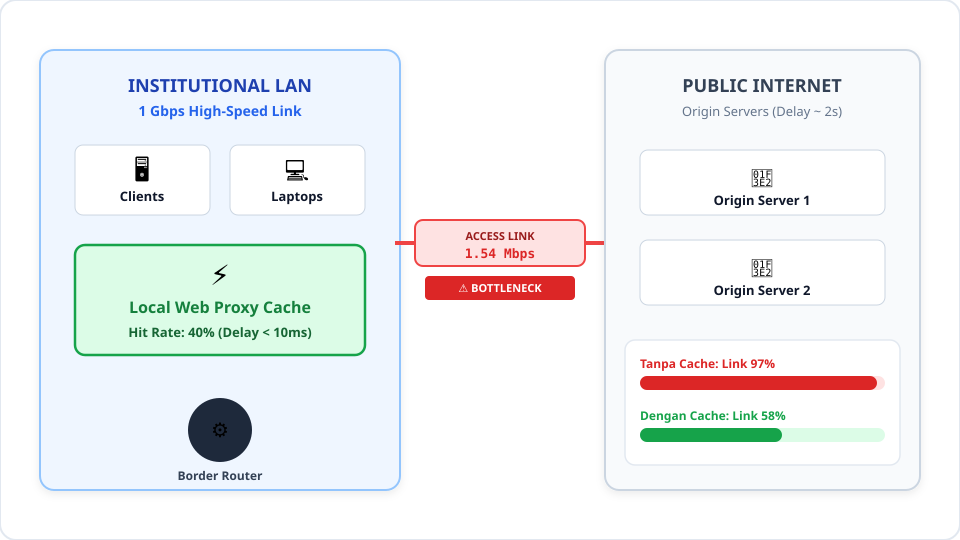
Evolusi Protokol Web: HTTP/1.1, HTTP/2, & HTTP/3
1. HTTP/1.1: Head-of-Line (HOL) Blocking di Lapisan Aplikasi
- Objek dikirim secara serial (FIFO) dalam satu koneksi TCP. Jika objek pertama terhambat, seluruh objek berikutnya ikut tertahan antre.
2. HTTP/2 (2015): Binary Framing & Stream Multiplexing
- Mengganti teks ASCII dengan frame biner.
- Multiplexing: Banyak request/response dipecah menjadi frame-frame kecil berselang-seling (interleaving) dengan Stream ID di dalam satu koneksi TCP tunggal tanpa HOL blocking aplikasi. Browser langsung merender file kecil yang sudah selesai tanpa menunggu file besar.
- Kelemahan (Transport HOL Blocking): Karena berjalan di atas satu pipa TCP tunggal, jika 1 paket TCP hilang di jaringan, seluruh buffer TCP membeku menunggu retransmisi → semua stream lain ikut macet!
3. HTTP/3 (2022): Migrasi ke QUIC (di atas UDP)
- Menggantikan TCP dengan QUIC di atas UDP: Setiap stream memiliki nomor urut dan penanganan kehilangan paket secara mandiri.
- Kehilangan paket pada 1 stream tidak membekukan stream lain! Terintegrasi TLS 1.3 bawaan dengan koneksi 0-RTT yang sangat cepat.
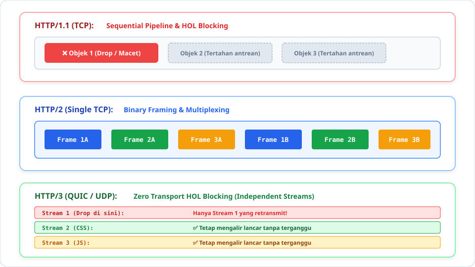
3. File Transfer Protocol (FTP) & Ekosistem E-mail
Arsitektur Dual-Channel Out-of-Band FTP, SMTP Push, dan Komparasi Protokol Akses POP3 vs IMAP
FTP: Arsitektur Dual-Channel Out-of-Band
FTP (File Transfer Protocol) memisahkan dua saluran koneksi (Out-of-Band Control):
- Control Connection (Port 21 TCP):
Klien membuka koneksi kontrol ke server pada port 21 untuk mengirim perintah teks ASCII (USER,PASS,LIST,RETR,STOR) dan menerima status respon.
Koneksi kontrol tetap terbuka sepanjang sesi pengguna aktif. - Data Connection (Port 20 / PASV TCP):
Diciptakan secara terpisah murni untuk mentransmisikan berkas file riil.
Dibuat baru & langsung ditutup otomatis untuk setiap 1 berkas!
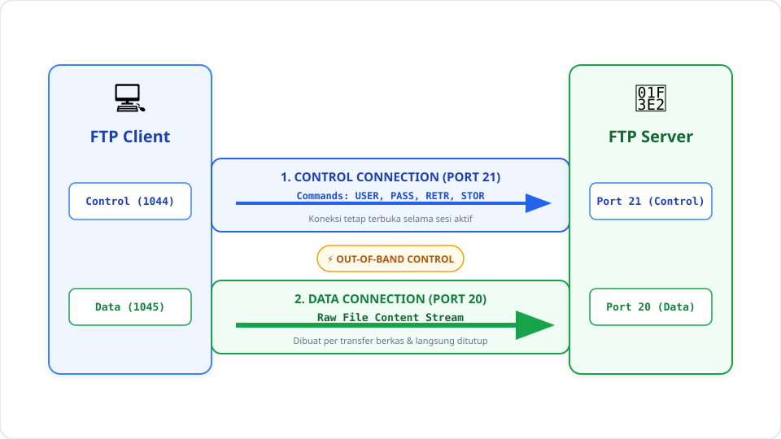
Gambar 12.8: Arsitektur Dual-Channel FTP (Port 21 Control & Port 20 Data)
Transmisi FTP: Active Mode vs Passive Mode (PASV)
Prinsip Stateful Firewall & NAT Klien:
- Outbound (Keluar): Diizinkan bebas. Router NAT membuat tabel pemetaan port keluar otomatis.
- Inbound (Masuk): DITOLAK secara default jika tidak diinisiasi dari dalam, untuk melindungi host dari peretas.
1. Active Mode (PORT) — Gagal Menembus Firewall & NAT:
- Klien kirim perintah
PORT N. Server Port 20 menginisiasi koneksi masuk (inbound) ke Port N klien. - Gagal: Firewall klien memblokir koneksi masuk asing, dan Router NAT tidak bisa me-routing paket ke IP privat klien!
2. Passive Mode (PASV) — Standar Internet Modern:
- Server membuka port data acak P. Klien yang menginisiasi koneksi keluar (outbound) ke Server:P.
- Sukses: Koneksi keluar diizinkan firewall klien dan ditranslasikan otomatis oleh router NAT.
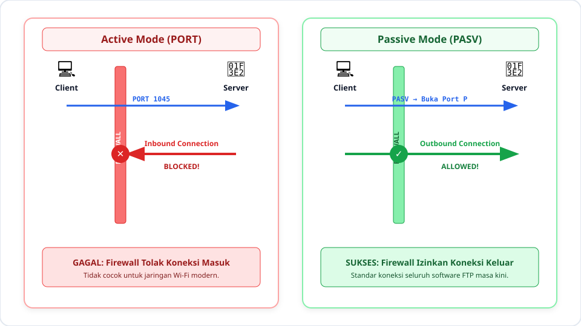
Gambar 12.9: Komparasi Transmisi FTP Active Mode vs Passive Mode (PASV)
Siklus Hidup Transmisi FTP: Multi-File Transfer
1. Setup Kontrol (Port 21 TCP — Persistent):
- Klien inisiasi TCP ke Port 21 → Server sapa
220 Service Ready. - Autentikasi:
USER/PASS→ Server balas230 Logged in. - Kanal kontrol tetap terbuka sepanjang sesi pengguna aktif.
2. Transfer Berkas 1 (Download file1.pdf):
- Klien kirim
PASV→ Server buka Port data acak P1 (misal 49152). - Klien buka TCP ke Port P1 → kirim
RETR file1.pdfdi kontrol. - Data dialirkan via Port P1 → Selesai: Server kirim TCP FIN (Port P1 ditutup).
3. Transfer Berkas 2 (Upload file2.jpg):
- Klien kirim
PASVlagi → Server buka Port data baru P2 (misal 51200). - Klien kirim
STOR file2.jpg→ Data dialirkan via P2 → Selesai: Klien kirim TCP FIN (Port P2 ditutup).
4. Terminasi Sesi: Klien kirim QUIT
→ Server balas 221 Goodbye → Kanal Kontrol Port 21 ditutup.
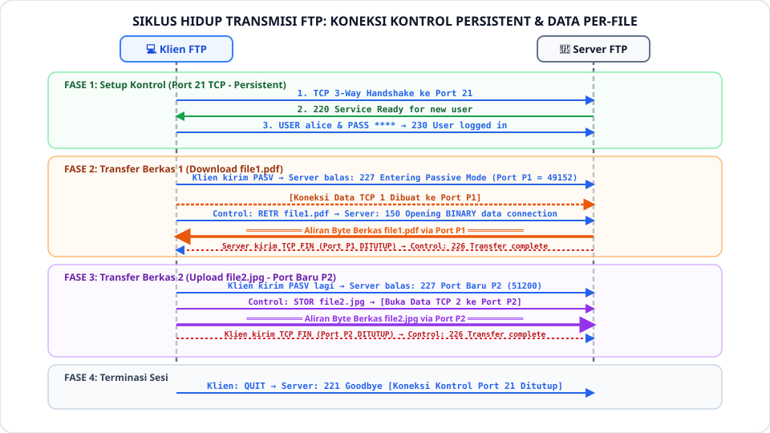
Gambar 12.10: Siklus Hidup Transmisi FTP: Kontrol Persistent & Data Ephemeral per Berkas
Ekosistem Surat Elektronik (E-mail)
Sistem email modern ditopang oleh 3 pilar komponen utama:
- 1. User Agent (Mail Reader):
Aplikasi antarmuka pengguna untuk menyusun, membaca, dan mengelola arsip email (contoh: Microsoft Outlook, Thunderbird, Apple Mail). - 2. Mail Server:
Jantung infrastruktur pengiriman email. Memiliki dua struktur krusial:- User Mailbox: Gudang lokal untuk menyimpan seluruh pesan yang telah tiba bagi pengguna lokal.
- Outgoing Message Queue: Antrean surat keluar yang menunggu giliran untuk dikirimkan ke mail server tujuan.
- 3. Simple Mail Transfer Protocol (SMTP):
Protokol standar antar-mail server untuk memindahkan surat melalui TCP Port 25 (atau Port 587 dengan enkripsi TLS).
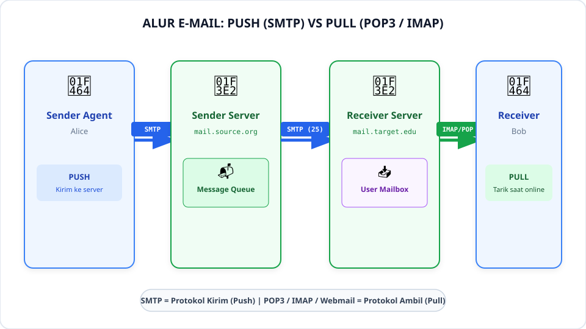
Protokol SMTP: Alur Pengiriman Pesan
1. Dialog SMTP & Status Code (RFC 5321):
| Kode | Nama Status | Arti & Alur Transaksi |
|---|---|---|
220 |
Service Ready | Server Greeting Banner: Server siap melayani setelah TCP terbentuk. |
250 |
Action OK | Perintah klien (HELO, MAIL FROM, RCPT TO)
sukses diterima. |
354 |
Start Mail Input | Izin mengetik body email. Diakhiri tanda titik tunggal pada baris baru
(.). |
221 |
Closing Channel | Respon penutupan koneksi setelah klien mengirim perintah QUIT. |
Secara transpor, klien memang yang menginisiasi TCP 3-way handshake. Namun pada layer aplikasi SMTP, klien wajib menunggu server menyapa terlebih dahulu untuk: (1) memastikan buffer antrean server siap, (2) mengumumkan kapabilitas ESMTP, dan (3) Early-Talker Defense (menangkal bot spam yang menembak perintah sebelum disapa).
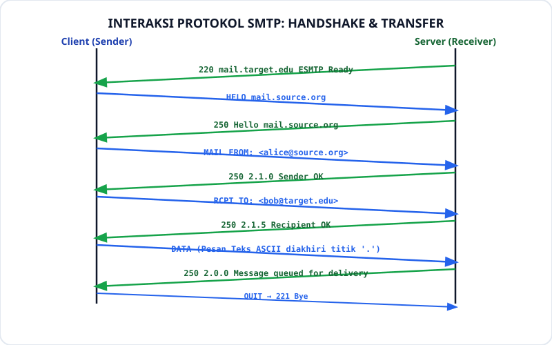
Protokol Akses Email: POP3 vs IMAP vs Webmail
Port 110 / Port 995 (SSL)
- Mode: Download and Delete (atau simpan lokal).
- Surat diunduh ke satu komputer pengguna.
- Client-Centric: Tidak ada sinkronisasi status (dibaca/belum) atau folder antar-perangkat berbeda.
- Cocok jika kuota penyimpanan server sangat terbatas dan pengguna hanya memakai 1 PC.
Port 143 / Port 993 (SSL)
- Mode: Server-Centric Sync.
- Seluruh pesan dan struktur folder (Sent, Draft, Trash) tetap disimpan di server.
- Status pesan (dibaca, dibintangi, dihapus) langsung tersinkronisasi otomatis di laptop, smartphone, dan tablet.
- Standar de-facto aplikasi email modern (Outlook, Apple Mail).
Port 80 / Port 443 (HTTPS)
- Pengguna mengakses mailbox melalui peramban web (Gmail, Outlook Web).
- Klien ↔ Mail Server menggunakan protokol HTTP/HTTPS.
- Antar-Mail Server tetap berkomunikasi menggunakan protokol SMTP.
- Sangat praktis tanpa perlu instalasi aplikasi klien khusus.
4. Domain Name System (DNS) & Keamanan Resolusi
Arsitektur Basis Data Terdistribusi, Resolusi Iterated vs Recursive, Resource Records & DNSSEC
DNS: Layanan & Alasan Desentralisasi
Layanan Utama DNS:
- Translasi Hostname ke IP: Manusia mudah mengingat nama
(
www.itera.ac.id), namun router jaringan mutlak memerlukan alamat IP biner (103.111.201.21). - Host Aliasing: Domain alias kanonikal yang mudah dibaca.
- Mail Server Aliasing: Memetakan nama server email institusi (MX Record).
- Load Distribution: Memetakan satu domain populer ke sekumpulan alamat IP server replika secara round-robin.
Mengapa DNS Tidak Boleh Disentralisasi (1 Server Dunia)?
- Single Point of Failure (SPOF): Jika satu server pusat tersebut meledak/down, seluruh internet dunia mati total!
- Volume Trafik: Milyaran perangkat menembakkan query bersamaan.
- Jarak Jaringan: Latensi tinggi bagi pengguna yang jauh dari lokasi server.
- Pemeliharaan Raksasa: Database raksasa mustahil dikelola satu entitas.

Hirarki Global Server DNS
Mekanisme pencarian DNS bekerja secara berjenjang dari atas ke bawah:
- Root DNS Servers (13 Gugus Logika A s.d. M):
• Arti Gugus A s.d. M: Nama resmi 13 server root internet (a.root-servers.nets.d.m.root-servers.net) yang dikelola 12 lembaga independen (Verisign, NASA, ICANN, WIDE, dll.).
• Mengapa Tepat 13? Batasan historis paket DNS via UDP maksimal 512 bytes (RFC 1035) yang hanya muat data 13 server root.
• Bukan 13 Komputer Fisik: Menggunakan teknologi IP Anycast, di mana tiap gugus direplikasi ke ratusan server fisik di seluruh dunia (> 1.700 server fisik global). - Top-Level Domain (TLD) Servers:
Mengelola domain tingkat teratas: Generic TLD (.com,.org,.edu) dan Country-Code TLD (.id,.uk,.jp). - Authoritative DNS Servers:
Server resmi milik organisasi yang menyimpan catatan asli host (misal DNS resmi kampus). - Local DNS Resolver:
Server DNS milik ISP/kampus yang menerima kueri awal dari host pengguna dan melakukan penelusuran berjenjang.
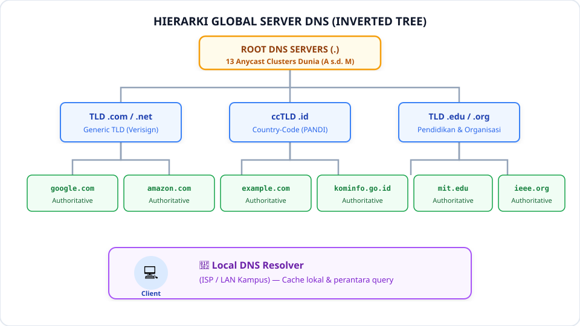
Metode Resolusi DNS: Iterated
- Host meminta translasi ke Local DNS Resolver.
- Local DNS bertanya ke Root DNS. Root merujuk: "Silakan tanya ke TLD .edu".
- Local DNS bertanya ke TLD .edu. TLD merujuk: "Silakan tanya ke Authoritative example.edu".
- Local DNS bertanya ke Authoritative example.edu → Mendapatkan IP target asli!
Mengapa Root Tidak Terbebani? Root Server bersifat Stateless: hanya memberi alamat rujukan server TLD lalu langsung lepas tangan (menutup sesi). Beban komputasi dan antrean menunggu dibebankan ke Local DNS Resolver.
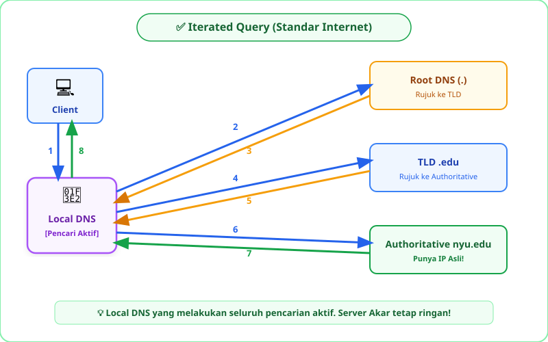
Gambar 12.12: Alur Kueri DNS Iterated (Standar Global)
Metode Resolusi DNS: Recursive
- Host meminta Local DNS mencari sampai dapat.
- Local DNS melempar query berantai ke Root Server.
- Root Server yang repot bertanya ke TLD.
- TLD yang repot bertanya ke Authoritative, lalu jawaban dikembalikan berantai ke bawah.
⚠️ Beban Komputasi Berat: Ditolak di Internet publik karena membebani antrean memori server akar (Root).
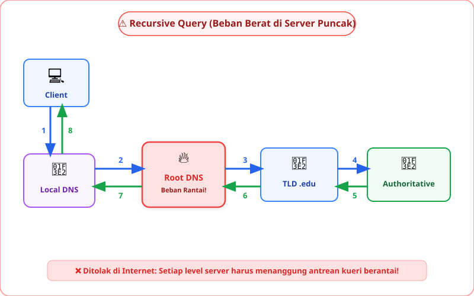
Gambar 12.12: Alur Kueri DNS Recursive (Rantai Beban di Akar)
Format Resource Record (RR) & Caching DNS
Database DNS menyimpan data dalam format tuple 4 nilai:
(Name, Value, Type, TTL)
| Tipe | Name | Value | Keterangan Fungsi |
|---|---|---|---|
| Type A | Hostname | Alamat IPv4 | Translasi standar nama host ke IPv4 (example.com →
103.111.201.21).
|
| Type AAAA | Hostname | Alamat IPv6 | Translasi ke format 128-bit IPv6. |
| Type NS | Domain | Host Name Server | Menunjuk Authoritative Name Server domain (dns1.example.com). |
| Type CNAME | Nama Alias | Nama Kanonikal | Alias ke nama asli server (relay1.example.com →
example.com).
|
| Type MX | Domain | Host Mail Server | Menentukan server penampung email masuk domain (mail.example.com). |
Begitu Local DNS menerima jawaban rujukan TLD/Authoritative, ia menyimpannya di memori RAM selama durasi TTL (biasanya 48 jam / 2 hari). Akibatnya, jutaan kueri pengguna berikutnya langsung dijawab dari cache lokal → lebih dari 99% kueri DNS di dunia tidak pernah menyentuh Root Server lagi!

Keamanan DNS: Ancaman Serangan & Solusi DNSSEC
Sebagai infrastruktur terpenting internet, DNS sering menjadi target serangan:
- 1. Serangan DDoS (Distributed Denial-of-Service):
Membombardir Root Servers dengan trafik sampah agar layanan lumpuh.
Pertahanan: Sangat tangguh berkat teknologi Anycast routing dan perlindungan caching berlapis di Local DNS seluruh dunia. - 2. DNS Cache Poisoning / DNS Spoofing:
Penyerang mengirim balasan palsu ke Local DNS resolver sebelum jawaban asli tiba. Akibatnya resolver menyimpan IP palsu (korban yang membuka web bank dibelokkan ke web phishing hacker). - 3. Solusi Industri: DNSSEC (DNS Security Extensions):
Menyediakan otentikasi asal data dan integritas pesan menggunakan kriptografi kunci publik. Setiap Resource Record ditandatangani secara digital (RRSIG). Resolver dapat memvalidasi apakah data DNS benar-benar berasal dari pemilik domain yang sah.
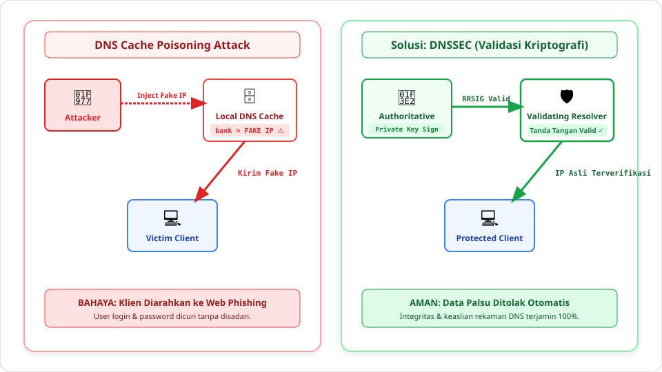
5. Eksplorasi Praktis, Simulasi & Evaluasi Mandiri
Hands-on CLI Tools, Simulasi Interaktif Lapisan Aplikasi, Matriks Komparasi Protokol & Tugas Mandiri
Eksplorasi Praktis:
CLI Tools (cURL & DNS)
Mengambil Header Saja (Tanpa Body Payload):
HTTP/2 200
server: nginx
strict-transport-security: max-age=31536000
-I: Parameter HEAD request (hanya minta metadata header, hemat bandwidth).200 OK: Dokumen ditemukan & valid.HSTS: Wajib HTTPS 1 tahun.
Uji Conditional GET (Verifikasi Cache):
HTTP/2 304 Not Modified
-H: Parameter kirim header kustom.304 Not Modified: File belum diedit, browser pakai cache lokal.
Pencarian Mail Exchanger (MX Record):
example.com mail exchanger = 1 mail.example.com.
-type=MX: Parameter kueri spesifik server mail. Nilai1adalah tingkat prioritas (tertinggi).
Pelacakan Hirarkis Delegasi DNS (+trace):
. 518400 IN NS a.root-servers.net.
id. 172800 IN NS a.dns.id.
example.com. 86400 IN NS dns1.example.com.
www.example.com. 3600 IN A 103.111.201.21
+trace: Mematikan kueri rekursif resolver dan melacak berjenjang dari Root (.) → TLD (.id) → Authoritative → IP host final. Angka: sisa durasi TTL (detik).
Simulasi Interaktif: HTTP & DNS Tracing
Rangkuman Komparasi Protokol Lapisan Aplikasi
| Dimensi Analisis | HTTP / HTTPS | FTP | SMTP | IMAP / POP3 | DNS |
|---|---|---|---|---|---|
| Port Default | 80 / 443 | 21 (Ctrl) & 20 (Data) | 25 / 587 | 143, 993 / 110, 995 | 53 |
| Protokol Transpor | TCP (HTTP/3: UDP) | TCP | TCP | TCP | UDP (Fallback TCP) |
| Pola Komunikasi | Request–Response | Out-of-band Dual-Channel | Direct Push | Pull (Pengambilan) | Query–Reply |
| Karakteristik Sesi | Stateless (State via Cookies) | Stateful (Koneksi kontrol tetap) | Stateful per sesi pengiriman | Stateful (IMAP) / Stateless (POP3) | Stateless |
| Format Payload | ASCII Header + Biner/MIME | Perintah ASCII + Berkas Biner | Teks ASCII 7-bit murni | Teks / MIME Encoded | Pesan Biner Resource Record |
| Fungsi Utama | Distribusi dokumen web | Transfer berkas terstruktur | Pengiriman email antar-server | Akses inbox oleh pengguna | Translasi nama ke IP address |
📝 Tugas Praktikum Mandiri: Analisis Protokol Aplikasi
Lakukan investigasi dan analisis lalu lintas protokol HTTP & DNS pada jaringan riil menggunakan perangkat analisis paket (Wireshark & CLI):
1. Jalankan Wireshark dan lakukan penangkapan paket
(packet capture) pada kartu jaringan aktif saat mengakses situs web kampus ITERA
(https://www.itera.ac.id).
2. Terapkan filter http atau dns.
Identifikasi dan jelaskan nilai field-field utama pada pesan HTTP GET
Request (Host, User-Agent) dan HTTP
Response (Status-Code, Content-Type,
Date).
3. Uji mekanisme Conditional GET: Lakukan *refresh*
halaman web dan buktikan kemunculan status 304 Not Modified pada rekaman
Wireshark atau via terminal curl -I -H "If-Modified-Since: ...".
4. Jalankan perintah penelusuran hierarki
dig +trace www.itera.ac.id (atau nslookup). Dokumentasikan alamat
IP Root Server, TLD Server .id, dan Authoritative Name Server ITERA yang
merespon.
5. Temukan dan catat perbedaan Resource Record Type
A, Type CNAME, dan Type MX pada domain
itera.ac.id.
6. Susun hasil pengujian ke dalam laporan praktikum mandiri berstandar template A4 margin 3 cm lengkap dengan tangkapan layar bukti eksekusi dan analisis kritis.
Tanya Jawab & Diskusi
Pertemuan berikutnya: Pertemuan 13: Keamanan Jaringan Komputer (Network Security)
Persiapkan pemahaman dasar mengenai prinsip kriptografi simetris/asimetris, otentikasi data, integritas pesan via hashing, protokol TLS/SSL, arsitektur VPN IPsec, serta mekanisme filtrasi paket pada Firewall.
Program Studi Teknik Informatika - Institut Teknologi Sumatera (ITERA)